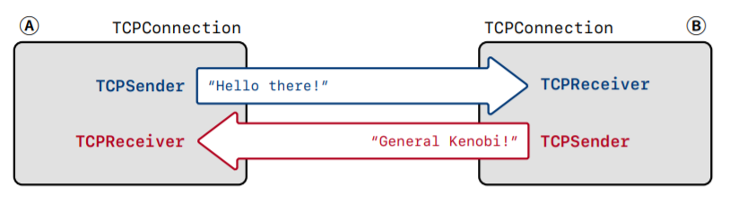

Stanford CS144 Introduction to Computer Network课程Project的lab4，这个lab主要任务是整合之前的Sender和Receiver，组合成TCP Connection，这个实验结束后，这门课就先暂告一段落了。
Overview 在CS144之前的lab中，我们实现了TCP的Sender和Receiver，分别用来收发TCP报文，而在这个lab中，我们需要实现的是CS144的整个用户态TCP协议Sponge的最后一个部分，即TCP的连接，连接(Connection)是网络通信协议中最重要的一个抽象，它需要整合TCP连接中位于一头的一对发送端和接收端，来实现在两个端点之间建立可靠有效的TCP连接的目的。
我们之前在lab中所说的，TCP的每个端点有一对处于流量控制下的字节流，分别就是Sender和Receiver，而这个lab要实现的TCP Connection，就相当于TCP连接中的一个端点，也叫做Peer，如下图所示：

TCP Connection TCP的Connection需要满足这样一些基本的功能和需求。
接收报文段 TCP Connection在收到来自互联网的TCP报文的时候，会调用segment_received这个函数，当这个方法被调用的时候，TCP Connection需要执行的操作分成如下几个步骤：
如果报文中有RST标记，表明整个TCP发生故障，需要立即断开连接并将Sender和Receiver的状态都改成error
否则就将这个报文段发送给Receiver并让它进行处理，并重点关注报文的seqno，payload和SYN/FIN两个标签
如果报文中有ACK标记，那么就需要通知Sender来发送当前所需的ackno和窗口大小
如果报文有数据并且占用了seqno，那么Connection保证至少要有一个报文被发出去作为回复
另外还有一种特殊的情况，就是TCP Connection需要回答一些查询keep-alive状态的报文段，这个时候的报文段会使用无效的seqno来检测当前的Connection是不是依然处于alive的状态，这个时候也需要用空的报文段作为回复。
发送报文段 TCP Connection会通过互联网不断向外发送TCP段，发送报文段的步骤可以概括为：
TCP Sender要负责将发送的报文段push到输出队列中，并且要填写好seqno和payload以及SYN/FIN等关键信息
在发送一个报文段之前，TCP Connection会询问Receiver发送相关的信息，包括ackno和窗口大小，如果有ackno那么就会在报文段的ACK标识处进行标记，上一次我们的实现的Sender其实已经实现了这个功能，现在只需要让Connection调用这个功能就可以
时间管理 TCP Connection中也有一个tick函数会定期被调用，当这个函数被调用的时候，需要做的事情包括：
通知Sender当前已经通过的时间，调用Sender的tick函数
如果发现连续重传的次数超过了一个上界，就断开TCP连接，表示这个时候网络不稳定，报文传输不出去
在必要的时候关闭当前的连接，这个时候的关闭被称为clean shutdown具体的可以看下一节
TCP连接的结束 这个lab中需要实现的很重要一项功能是判断TCP连接在什么时候会结束。在TCP连接结束的时候也需要进行一系列的操作，比如停止发送ackno和将active状态改成false
一般来说连接关闭的情况有两种，一种是unclean的，即发送/接收的TCP报文中，这种情况下管理输入输出的字节流都应该设置成error状态，并且将active设置成false，另一种是clean shutdown，是在没有error的情况下结束当前的连接，这时候需要保证TCP连接的两端都能确认对面已经知道了连接要结束的信息，并在一个合适的时间关闭TCP连接，整个过程可以概括为下面几步：
输入字节流已经被全部整流并且收到了EOF
输出流已经被本地应用关闭并且全部发送给了另一个端点
输出流中的报文已经全部被另一个端点收到并确认了
本端点的TCP连接可以知道另一个端点已经满足了前面三个条件
这个归结起来其实就是TCP连接关闭的时候需要进行“四次握手”，只不过这里没有显式的提出这个概念，而是将四次握手拆分成了两个端点各自的要求。
代码实现 类定义 首先定义几个要用到的类变量以及代码实现中需要多次使用的函数
1 2 3 4 5 6 7 8 9 10 11 12 13 14 15 16 17 18 19 20 21 22 class TCPConnection {private :bool _linger_after_streams_finish{true };bool _is_active = true , _fin_sent = false ,_fin_sent_and_acked = false ;uint64_t _segment_received_ms = 0 , _ms = 0 ;void send_reset () void send_segment (const TCPSegment &segment) void send_all_segments class TCPConnection {private :bool _linger_after_streams_finish{true };bool _is_active = true , _fin_sent = false ,_fin_sent_and_acked = false ;uint64_t _segment_received_ms = 0 , _ms = 0 ;void send_reset () void send_segment (const TCPSegment &segment) void send_all_segments ()
然后我们先来实现这几个自己定义的常用函数，函数的功能从它的函数签名就可以读出来：
1 2 3 4 5 6 7 8 9 10 11 12 13 14 15 16 17 18 19 20 21 22 23 24 25 26 27 28 29 30 31 32 33 void TCPConnection::send_all_segments () while (!_sender.segments_out ().empty ()) {send_segment (_sender.segments_out ().front ());segments_out ().pop ();void TCPConnection::send_segment (const TCPSegment &segment) if (_receiver.ackno () != std::nullopt) {header ().ack = true ;header ().ackno = *_receiver.ackno ();header ().win = _receiver.window_size ();header ().fin;push (seg);void TCPConnection::send_reset () while (!_sender.segments_out ().empty ()) {segments_out ().pop ();send_empty_segment ();auto segment = _sender.segments_out ().front ();segments_out ().pop ();header ().rst = true ;send_segment (segment);false ;stream_out ().set_error ();stream_in ().void TCPConnection::send_all_segments () while (!_sender.segments_out ().empty ()) {send_segment (_sender.segments_out ().front ());segments_out ().pop ();void TCPConnection::send_segment (const TCPSegment &segment) if (_receiver.ackno () != std::nullopt) {header ().ack = true ;header ().ackno = *_receiver.ackno ();header ().win = _receiver.window_size ();header ().fin;push (seg);void TCPConnection::send_reset () while (!_sender.segments_out ().empty ()) {segments_out ().pop ();send_empty_segment ();auto segment = _sender.segments_out ().front ();segments_out ().pop ();header ().rst = true ;send_segment (segment);false ;stream_out ().set_error ();stream_in ().set_error ();
建立与中止连接 建立连接实际上就是让Sender填满窗口大小之后发送出所有对应的TCP段，而关闭连接的时候则是先让Sender将输入流关闭然后把所有的TCP段发送出去
1 2 3 4 5 6 7 8 9 10 void TCPConnection::end_input_stream () stream_in ().end_input ();fill_window ();send_all_segments ();void TCPConnection::connect () fill_window ();void TCPConnection::end_input_stream () stream_in ().end_input ();fill_window ();send_all_segments ();void TCPConnection::connect () fill_window ();send_all_segments ();
tick Connection的tick方法主要是调用Sender的tick然后判断一下重传的次数是不是超过上限了，如果没有就正常发送，如果超过上限就关闭连接。
1 2 3 4 5 6 7 8 9 10 11 12 13 14 void TCPConnection::tick (const size_t ms_since_last_tick) tick (ms_since_last_tick);if (time_since_last_segment_received () >= 10 * _cfg.rt_timeout) {if (_fin_sent_and_acked && _receiver.stream_out ().input_ended ()) {false ;if (_sender.consecutive_retransmissions () <= TCPConfig::MAX_RETX_ATTEMPTS) {send_all_segments ();else {void TCPConnection::tick (const size_t ms_since_last_tick) tick (ms_since_last_tick);if (time_since_last_segment_received () >= 10 * _cfg.rt_timeout) {if (_fin_sent_and_acked && _receiver.stream_out ().input_ended ()) {false ;if (_sender.consecutive_retransmissions () <= TCPConfig::MAX_RETX_ATTEMPTS) {send_all_segments ();else {send_reset ();
segment_received Connection用来处理收到的TCP报文段的函数，需要根据SYN/FIN/RST来做出不同的操作。
1 2 3 4 5 6 7 8 9 10 11 12 13 14 15 16 17 18 19 20 21 22 23 24 25 26 27 28 29 30 31 void TCPConnection::segment_received (const TCPSegment &seg) if (seg.header ().rst) {false ;stream_in ().set_error ();stream_out ().set_error ();else {segment_received (seg);if (seg.header ().ack) {ack_received (seg.header ().ackno, seg.header ().win);if (_fin_sent) {if (seg.header ().ackno == _sender.next_seqno ()) {true ;if (!_linger_after_streams_finish) {false ;if (_receiver.stream_out ().input_ended () && !_fin_sent) {false ;if (_receiver.ackno () != std::nullopt) {fill_window ();if (_sender.segments_out ().empty () && seg.length_in_sequence_space () >= 1 ) {send_empty_segment ();void TCPConnection::segment_received (const TCPSegment &seg) if (seg.header ().rst) {false ;stream_in ().set_error ();stream_out ().set_error ();else {segment_received (seg);if (seg.header ().ack) {ack_received (seg.header ().ackno, seg.header ().win);if (_fin_sent) {if (seg.header ().ackno == _sender.next_seqno ()) {true ;if (!_linger_after_streams_finish) {false ;if (_receiver.stream_out ().input_ended () && !_fin_sent) {false ;if (_receiver.ackno () != std::nullopt) {fill_window ();if (_sender.segments_out ().empty () && seg.length_in_sequence_space () >= 1 ) {send_empty_segment ();send_all_segments ();
总结 到这里为止，CS144这门课的TCP实现就差不多结束了，回过头来看这样写一个非常Naive的用户态TCP协议确实挺有意思，一路过来的收获也不少，那么我们下一门课见。